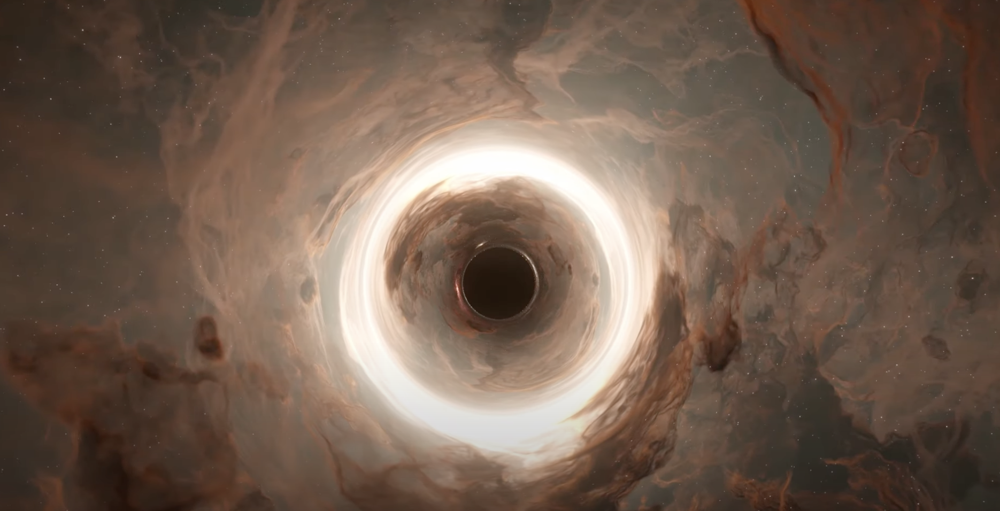
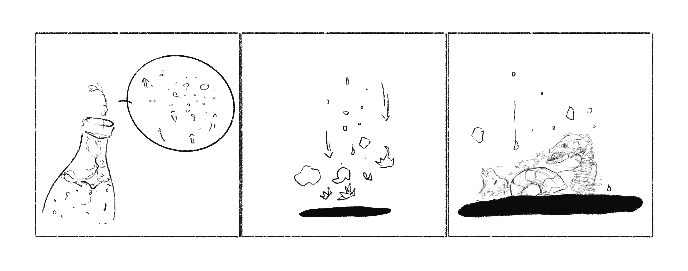
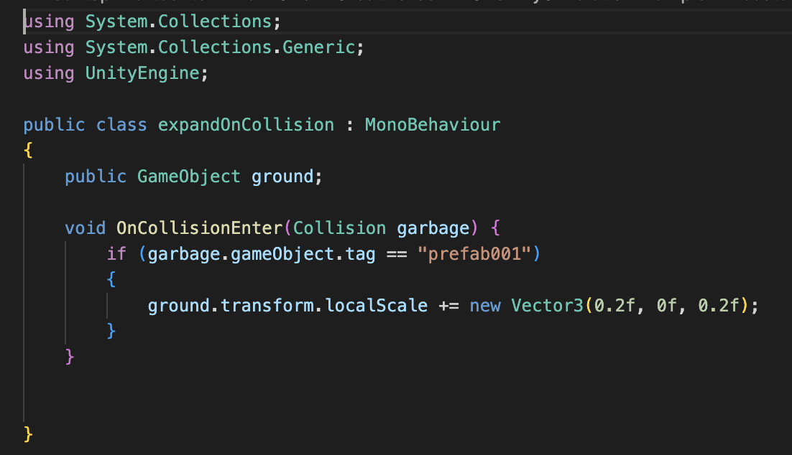
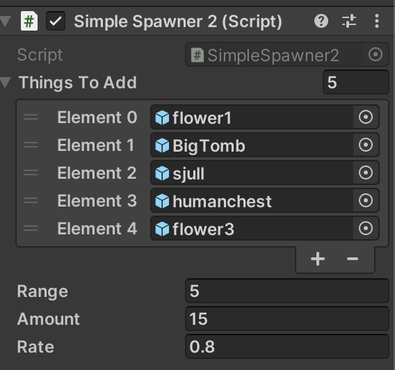

SIMULATION: ENTROPY
1. "Accretion"
During research, I found the most frequently used situation for "accretion" is discribing the motion of the black hole. The black hole seems to carry a negative feeling: it absorbs, resolves, and melts things out.
Then the word "entropy" came into my mind. “Life feeds on negative entropy!", said Erwin Schrödinger. The sparkling water might be evaporated and vanished, so does anything else. Things would be accreted, which seems to be prosperous at first; the black hole engulfs them, dissolving everything, and finally, the black hole might be disappeared as well.
Therefore, I would like to interpret the word "accretion" with the following process: bubbles sparkled and went up, vanished in the air, so did everything else. Items were rotten and absorbed by the black hole, which feed the black hole to be expanding.
2. Development: Spawn Objects
I combined the Unity resources from Canvas and YouTube tutorial to initiate a black hole setting:
I added a script to the ground object to make it expanded after some of the collisions have been detected:
To randomize the spawned objects, I added an array to the script, and also played around with the range and amount input:
3. Development: 3D Modeling
Since the project is about designing and building a worldview, I also would like to expand the simulation in more visual ways. Therefore, I tried with Blender and generated some animation and visual effects to show the sparklings:
I also played with the compositing part, which is a brand new challenge to me, to add additional layers of effects:

4. Reflection
Many of the concepts and its manifestation can still be expressed in more detailed ways. During my research stage, I found an YouTuber who has made a bunch of tutorials about making a black hole's accretion with Unity, which seems to be very intuitive for this project. However, he spent most of the time explaining the mathematical logic behind the movement of the visual effect, which sound unfamiliar to me but really impressive. I think the verb about this simulation project has so much depth worthy to be developed, and to be reflected through technological development like Unity and many other ways.